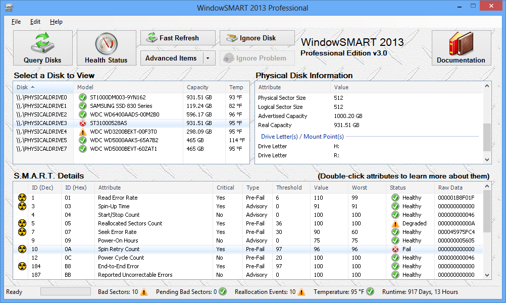

Main Window Tour
Nearly everything you'll do in WindowSMART will be done in the main window. Therefore it is a good idea to be familiar with the components of the main window. It is broken down into six key areas:

Menu Bar
The Menu Bar presents you with these options:
Control Buttons
There are several large buttons that perform the following functions.
Physical Disk Selector
The Physical Disk Selector displays all physical disks attached to the computer, regardless of interface. Whether the disk is IDE (PATA), SATA/eSATA, SCSI, USB or IEEE 1394, it will be displayed. If any flash drives are attached, they too will be displayed, and can be selected.
The Physical Disk Selector will display the physical hardware path, in the format \\.\PHYSICALDRIVEx (where "x" is a number), as well as the disk's model and capacity.
The model column will display an icon next to each disk which provides a quick overview of the disk's status. If the disk is healthy, a green circle with a checkmark is displayed. If the disk is too hot, or if some problems are starting to appear, a yellow triangle with an exclamation point is shown. A disk that is critically hot or has serious problems will show a red circle with an X. A disk that has an unknown health status will show a blue circle with a question mark. A disk that is not showing problems but has raised flags indicating it may be exceeding its designed lifetime will show the "geriatric" flag, which is a blue flag with a yellow triangle.
To view the physical disk characteristics, as well as S.M.A.R.T. data (if available), click on a disk in this list. Regardless of the disk (hard disk or flash drive) and interface type, data will always be displayed in the Physical Disk Details. PATA and SATA/eSATA disks that expose S.M.A.R.T. data will show that data in the S.M.A.R.T. details table.
Disks that are known virtual disks, such as VirtualBox, Hyper-V, mounted VHDs, etc. by default are hidden and do not appear in this view. This also includes virtual disks created by pooling software such as Drive Bender or StableBit DrivePool.
Physical Disk Details
The Physical Disk Details provides you with some data about the disk that you may find useful. Information such as the disk's model, physical location, interface type, operating system status and storage driver failure prediction flag is presented. Details about the disk capacity are also presented, such as the number of sectors, cylinders, heads, etc.
The Physical Disk Details also provides you with the disk's Advertised Capacity and Real Capacity. The Advertised Capacity is the base-10 capacity of the disk, which is the number manufacturers use when selling a disk. The Real Capacity is the actual, usable capacity of the disk, and is the base-2 capacity. The Real Capacity is the value the operating system reports as being available to you.
For example, a manufaturer may sell you a disk and claim its capacity is 1 terabyte, or 1,000,000,000,000 bytes. This is because manufacturers define 1 MB and 1 GB in base-10, so 1 MB is 1,000,000 bytes and 1 GB is 1,000,000,000 bytes. In reality, MB, GB and TB are defined in base-2, so 1 MB is realy 1,048,576 bytes and 1 GB is really 1024 MB (not 1000 MB as manufacturers like to claim), and therefore 1,073,741,824 bytes.
So when you buy a hard drive that a manufacturer claims is 1 terabyte, or 1,000,000,000,000 bytes, you're actually getting 931.51 GB, since a terabyte is really 1,099,511,627,776 bytes!
If the disk is a Solid State Disk, the SSD controller manufacturer along with whether or not TRIM is supported will be shown. If the disk is an HDD, the RPM (if available) will be shown.
SMART Details
If the selected hard disk has SMART data available, that data is displayed in the SMART Details. Each attribute is displayed on its own line. The details displayed are as follows:
Consult the What is SMART portion of this help for more details on these attributes, as well as SMART in general.
To learn more about the selected attribute, double-click on it. If the attribute in question is showing a problem that you are allowed to ignore, the Ignore Problem button appears.
Status Bar (Quick Stats)
The Quick Stats give you an at-a-glance view of the most sought-after attributes that most users want to see right away, without having to wade through the whole list of attributes. The attributes presented here are for HDDs:
The attributes presented are different for SSDs, and will vary depending on the SSD controller manufacturer. However, the common ones usually shown are:
Next to each of these attributes will be an icon. The icon may be a green circle with white checkmark, yellow triangle with exlamation mark or red circle with a white "X". If a drive doesn't implement a sensor to report a specific attribute (many SSDs do not have temperature sensors), a red X will appear.
If the icon is green, the attribute is healthy and of no concern. If the icon is yellow, there is a problem that has the potential to become serious. You should keep a close eye on the disk and be sure the problem doesn't get worse. If the item in question is the temperature, make sure that all fans are functioning correctly and that the disk is receiving good airflow. Note that if S.M.A.R.T. data is not available for the disk, all of the values will show N/A and have a yellow icon.
If the icon is red, a serious problem exists and it is recommended that you take immediate corrective action. If the temperature is the problem, get the disk cooled quickly. If the problem is related to bad sectors or reallocation events, the disk should be replaced.